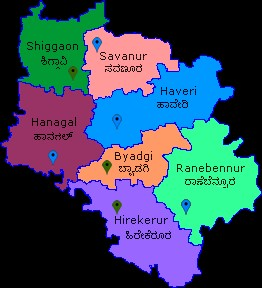

Hangal: A Historic Town in Karnataka
Hangal is a historic town in Karnataka, located 80 km (50 mi) away from Hubli through NH 766E. It lies about 75 kilometres (47 mi) south of the city of Hubli-Dharwad, about 30 kilometres (19 mi) west of the Tungabhadra river and east of the Arabian sea. The town is on level terrain in an agricultural district.
Hangal Taluk Statistics
As of the 2001 India census, Hangal had a population of 25,011. Males constituted 51% of the population and females 49%. Hangal had an average literacy rate of 64%, higher than the national average of 59.5%. Male literacy was 67%, and female literacy was 60%. 14% of the population is under six years of age.
Political Representation
Srinivas Mane of the Indian National Congress party is the MLA representing the Hangal (Vidhana Sabha constituency) since 2 November 2021.
Hangal Travel Information
Hangal is approximately 370 kilometres (230 mi) from Bengaluru and 40 kilometres (25 mi) from Haveri. The town can be reached from Bengaluru via Chitradurga and Haveri and from Dharwad via Hubli and Shiggavi. The nearest rail head is at Haveri (railway station code HVR).
Historic Temple in Hangal
Tarakeshwara Temple

The Tarakeshwara Temple is a large structure decorated with images and pillars dating to the Chalukya era in the mid-12th century and dedicated to the Hindu god Shiva in his form as Tarakeshwara.